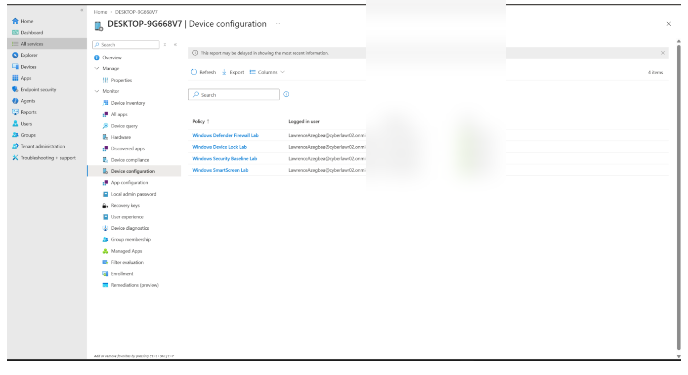
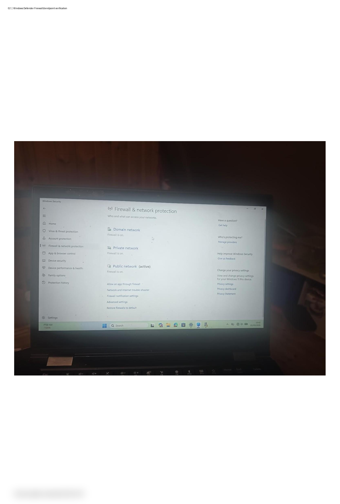
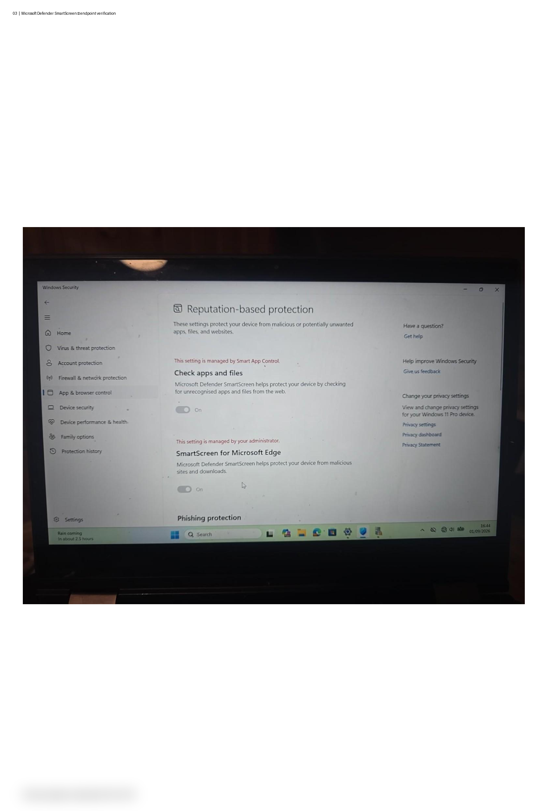

This project demonstrates practical Microsoft Intune experience through the
configuration, deployment and validation of Windows endpoint security policies.
The lab focused on managing a Windows 11 Pro device and verifying security
controls directly on the endpoint.
Project Overview
Microsoft Intune provides cloud-based endpoint management and security policy
deployment. In this project I created and deployed Windows security configuration
profiles, monitored their deployment status and validated the resulting controls
on a managed Windows endpoint.
Why I Built This Lab
I created this lab to gain practical endpoint management experience beyond
certification study. The project demonstrates how security policies can be
configured centrally in Intune, applied to a Windows device and then verified
at the endpoint.
Lab Environment
Microsoft Intune
Microsoft Entra ID
Windows 11 Pro endpoint
Windows Settings Catalog
Microsoft Defender Firewall
Microsoft Defender SmartScreen
Windows device lock and inactivity controls
Project Objectives
Enroll and manage a Windows endpoint with Microsoft Intune.
Create Windows security configuration profiles.
Configure Microsoft Defender Firewall settings.
Configure Microsoft Defender SmartScreen.
Configure Windows inactivity and device lock controls.
Monitor policy deployment and verify successful application.
Validate security controls directly on the Windows endpoint.
Implementation Summary
I created four Intune configuration profiles covering Windows security baseline
controls, Microsoft Defender Firewall, device lock and Microsoft Defender
SmartScreen. The policies were assigned to the managed Windows endpoint and
successfully reported as applied in Intune.
Endpoint validation was then performed using Windows Security and Windows
security administration tools to confirm that the configured controls were
being enforced on the device.
Security Policies Configured
Windows Security Baseline Lab — Windows security configuration and Microsoft Defender controls.
Windows Defender Firewall Lab — Firewall protection enabled across network profiles with restrictive inbound defaults.
Windows Device Lock Lab — Interactive Logon Machine Inactivity Limit configured to 900 seconds.
Windows SmartScreen Lab — Microsoft Defender SmartScreen configured and managed by Intune.
Validation & Results
Intune reported all four configuration profiles as Succeeded
on the managed Windows endpoint. The Windows device was then checked locally
to verify the deployed security controls.
Windows Defender Firewall — enabled for Domain, Private and Public network profiles.
Microsoft Defender SmartScreen — enabled and shown as managed by the administrator.
Device inactivity limit — configured to 900 seconds and verified through Windows security policy settings.
Policy deployment — all four Intune configuration profiles reported successful application.
Challenges & Troubleshooting
During validation, I tested the Windows inactivity control and investigated the
difference between an enforced inactivity policy and Windows power-management
settings. The inactivity limit was confirmed at 900 seconds, while the device's
separate screen, sleep and hibernate timers were reviewed independently.
This reinforced the importance of validating both the central Intune policy and
the resulting endpoint configuration rather than relying only on deployment status.
Skills Demonstrated
Microsoft Intune
Windows Endpoint Management
Microsoft Entra ID
Settings Catalog
Security Configuration Profiles
Microsoft Defender Firewall
Microsoft Defender SmartScreen
Windows Security Administration
Policy Deployment & Monitoring
Endpoint Validation & Troubleshooting
Project Screenshots
The screenshots below demonstrate the deployment and endpoint validation stages
of the Microsoft Intune security lab.

Figure 1 — Microsoft Intune configuration profiles successfully applied to the managed Windows endpoint.

Figure 2 — Windows Defender Firewall enabled across the Windows network profiles.

Figure 3 — Microsoft Defender SmartScreen enabled and managed by the administrator.
Security policies must be validated after deployment.
Intune deployment status does not replace endpoint-side verification.
Windows security controls and power-management settings can operate independently.
Centralised endpoint management provides a practical way to enforce security standards.
Troubleshooting requires checking both the management platform and the endpoint.
Conclusion
Building this lab strengthened my understanding of Microsoft Intune, Windows
endpoint management and practical security policy deployment. It also improved
my ability to configure, monitor and validate security controls across a managed
Windows environment.